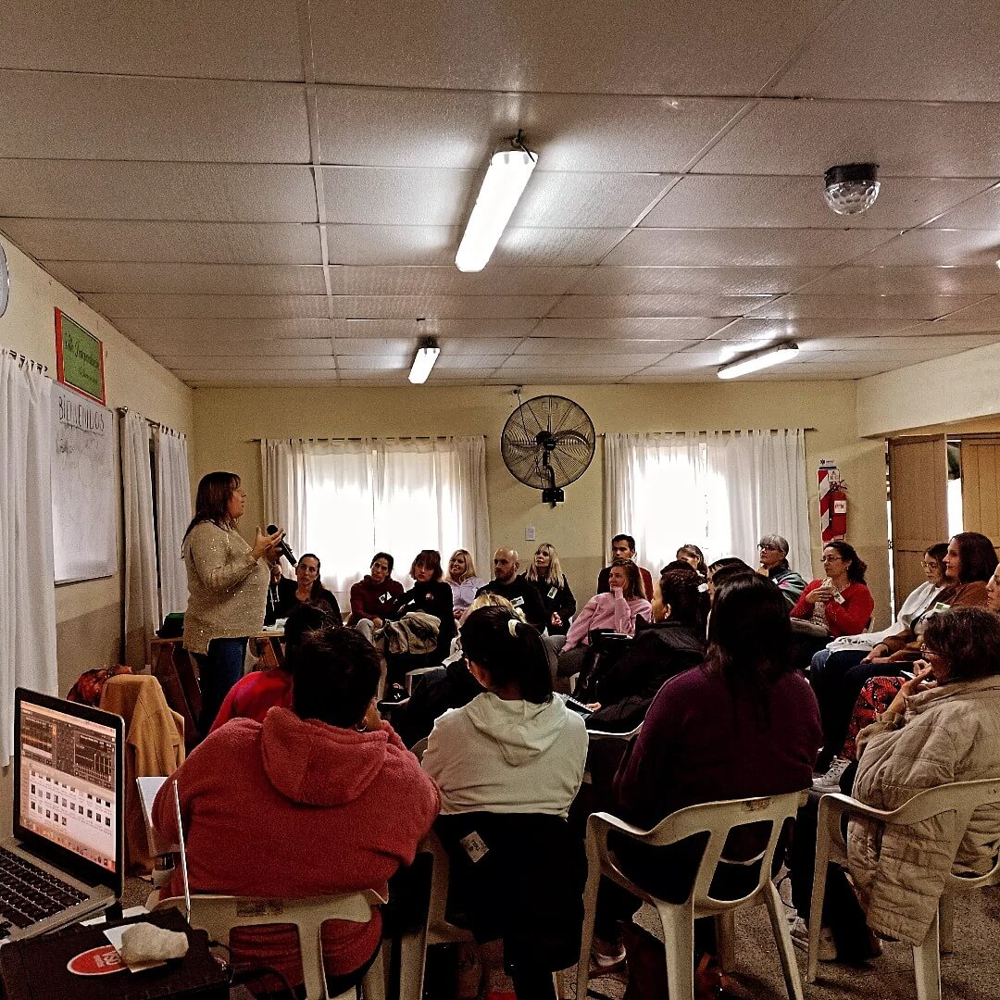

Sentido biológico
Cada síntoma tiene un sentido de supervivencia. La biodecodificación te ayuda a comprender el mensaje de tu cuerpo y a desactivar el programa de estrés.
"El cuerpo habla lo que la mente calla"
Cada síntoma es un mapa preciso. No es un error de la naturaleza, sino una solución biológica a un conflicto emocional que no hemos podido gestionar. Mi misión es acompañarte a leer ese mapa para que puedas recuperar tu poder y liberar las cargas que no te pertenecen.
Reservar ConsultaUna formación integral que une la precisión de las 5 Leyes Biológicas con la profundidad de la sanación transgeneracional.
Cada síntoma tiene un sentido de supervivencia. La biodecodificación te ayuda a comprender el mensaje de tu cuerpo y a desactivar el programa de estrés.
Los conflictos no resueltos del clan pueden repetirse. Trabajamos proyecto sentido y árbol para liberar cargas que no te pertenecen.
Dejas de ser víctima del síntoma para convertirte en protagonista de tu proceso de sanación y de tu vida.
Aprendés con bases científicas (5 Leyes Biológicas) y herramientas terapéuticas aplicables en consulta y en tu vida.
Un recorrido profundo de transformación personal y profesional. Dirigido a terapeutas, coaches, profesionales de la salud y a quienes buscan respuestas sobre el sentido de la enfermedad y el síntoma.

 Próximo
Próximo
Explora los conflictos de supervivencia y territorio que bloquean tu abundancia.
Ver detalles Presencial
Presencial
Aprende técnicas ancestrales de protección y limpieza energética de personas y espacios, y descubre el poder de los Códigos Sagrados como herramienta de apoyo para tu vida cotidiana
Ver detalles Grabado
Grabado
Reconecta con tu niño interior para sanar heridas emocionales del pasado, liberar patrones limitantes y recuperar tu alegría, creatividad y vitalidad natural
Ver detallesUna sesión individual te permite ir al origen de tu síntoma o conflicto y desactivar el programa biológico con acompañamiento profesional.
"Tu sistema es el mapa hacia tu tesoro interior."
Mi camino comenzó con la búsqueda de respuestas que me llevaron a estudiar Psicología y trabajar como Asistente Terapéutica. En 2016 descubrí la Biodecodificación y, años más tarde, los Registros Akáshicos, dos prácticas que transformaron mi manera de entender el síntoma, las emociones y la vida misma.
Soy Andrea Carolina, curiosa insaciable, emprendedora y con una profunda vocación de servicio. Entiendo el síntoma no como un enemigo, sino como un mensaje que nos invita a mirar hacia adentro. Mi propósito es acompañarte en ese proceso de sanación, conciencia y evolución, porque una vida más plena y consciente es posible para todos.
Respuestas a las dudas más habituales sobre biodecodificación, sesiones y formación.
Videos sobre biodecodificación, talleres y proceso de sanación.